대기환경산업기사 (2007-05-13 기출문제)
1과목: 대기오염개론
1. 대기 구조물 균질층(homosphere)과 이질층(heterosphere)으로 구분할 때 균질층의 최대범위로 가장 적절한 것은?
- 지상 0-50km
- 지상 0-88km
- 지상 0-155km
- 지상 0-200km
(정답률: 알수없음)

2. Chloro Fluoro Carbon - 11(CFC-11)의 올바른 화학식은?
- CCL3F
- CCL2F2
- CC2FCCLF2
- CH3CCL3
(정답률: 알수없음)
3. 일산화탄소(CO)에 관한 다음 설명 중 옳지 않은 것은?
- 대기 중에서 다른 오염물질과 유해한 화학반응을 거의 일으키지 않는다.
- 인위적 발생원으로 가장 많은 양은 석탄연소 및 공업(석유정제,제철소 등 이다.)
- 물에 난용성이기 때문에 비에 의한 영향을 거의 받지 않는다.
- 토양 박테리아의 활동에 의해 이산화탄소로 산화되어 대기 중에서 제거된다.
(정답률: 알수없음)
4. 다음 그림은 고도에 따른 기온구배를 나타낸 것이다. 이 중 매연의 확산폭이 가장 큰 기온 구배는?
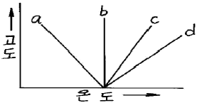
- a
- b
- c
- d
(정답률: 알수없음)
5. 다음 중 건조대기(공기)의 부피농도(%)순으로 옳은 것은?
- O2 ＞ CO2 ＞ Ar
- CO2 ＞ O2 ＞ Ar
- O2 ＞ Ar ＞ CO2
- CO2 ＞ Ar ＞ O2
(정답률: 알수없음)
6. 인체내에서 콜레스테롤, 인지질 및 지방분의 합성을 저해하거나 기타 다른 영양물질의 대사장애를 일으키는 대기오염물질로 가장 적절한 것은?
- 셀레늄(Se)
- 탈리움(TI)
- 바나듐(V)
- 알루미늄(AI)
(정답률: 알수없음)
7. 다음 성분 중 일반적으로 대기 내 체류시간이 가장 짧은 것은?
- CO
- CO2
- N2O
- CH4
(정답률: 알수없음)
8. 다음 국제적인 환경오염사건 중 MIC(메틸이소시아네이트)가스의 유출로 발생한 것은?
- 도노라(Donora)사건.
- 보팔(Bhopal)사건
- 크라카타우(Krakatau)섬 사건
- 도꼬-요꼬하마(Tokyo - Yokohama)사건
(정답률: 알수없음)
9. 다음 중 인체에 흡입되었을 때 특히 발열(금속증기열)이 특징인 유해오염물질은?
- Hg, Cd
- Cr,Pb
- Zn, Mn
- Cu,AI
(정답률: 알수없음)
10. 대기오염농도를 추정하기 위해 “상자모델(box model)"의 이론을 전개하고자 한다. 다음 중 고려해야 할 가정으로 가장 거리가 먼 것은?
- 배출된 오염물질은 다른 물질로 변하지도 않고 지면에 흡수되지도 않는다.
- 오염물의 분해는 0차 반응에 의한다.
- 상자 공간에서 오염물의 농도는 균일하다.
- 상자 안에서는 밑면에서 방출되는 오염물질이 상자 높이인 혼합층까지 즉시 균등하게 혼합된다.
(정답률: 알수없음)
11. 다음 중 온위(θ(K): Potential Temperature)를 표시한 식으로 옳은 것은? (단, R 및 C는 상수, T는 기온(K) PO: 기준이 되는 고도에서의 기압(1000mb) P: 기온측정 고도에서의 기압(mb)을 나타냄)
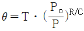
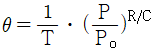
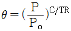
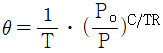
(정답률: 알수없음)
12. 먼지의 농도를 측정하기 위해 여과지를 통해 공기의 속도를 12 m/min로 하여 10시간 동안 여과시킨 결과, 깨끗한 여과지에 비해 사용된 여과지의 빛 전달율이 75%였다. 이 때 1000m당 Coh는?
- 0.75
- 1.74
- 2.84
- 3.12
(정답률: 알수없음)
13. 오존층의 두께를 표시하는 단위인 돕슨(Dobson)에 관한 설명으로 옳은 것은?
- 지구 대기 중의 오존층량을 표준상태에서 두께로 환산했을때 1mm를 100돕슨으로 정의한다.
- 지구 대기 중의 오존층량을 표준상태에서 두께로 환산했을대 1cm를 100돕슨으로 정의한다.
- 지구 대기 중의 오존층량을 표준상태에서 두께로 환산했을때 1m를 100돕슨으로 정의한다.
- 지구 대기중의 오존층량을 표준상태에서 두께로 환산했을때 100돕슨으로 정의한다.
(정답률: 알수없음)
14. 다음 중 황산화물(SOX)이 인체에 미치는 영향으로 가장 거리가 먼 것은?
- SO2가 인체에 미치는 피해는 농도와 노출시간이 문제가 되며, 주로 호흡기 계통의 질환을 일으킨다.
- 흡인된SO2의 95%의 이상은 하시도에 흡수되며, 잔여량이 비강 또는 인후에 흡수된다.
- SO3는 호흡기 계통에서 분비되는 점막에 흡착되어 H2SO4가 된 후, 조직에 작용하여 궤양을 일으킨다.
- SO2가 적당히 노출되었을 때에는 상부호흡기에 영향을 미치며, 단독흡입보다 먼지나 액적 등과 동시에 흡입하게 되며 황산미스트가 되어 SO2보다 독성이 10배로 증가한다.
(정답률: 알수없음)
15. 다음 중 연기내에서 오염의 단면분포가 전형적인 가우시안 분포(Gaussian distribution)를 보이는것은?
- 환상형(looping)
- 원추형(coning)
- 부채형(fanning)
- 지붕형(lofting)
(정답률: 알수없음)
16. 다음 중 대기 오염물질 중 2차 오염물질로만 나열된 것은?
- NO, SO2, HCL
- PAN, NOCL, O3
- PAN, NO, HCL
- O3, H2S,금속염
(정답률: 알수없음)
17. 자동차에서 배출되는 배기가스에 관한 설명으로 가장 거리가 먼 것은?
- 일반적으로 자동차의 주요 배출 유해가스는 CO, NOx,,HC 등이다.
- 휘발유 자동차의 경우, CO는 가속시, HC는 정속시, NOx는 감속시에 상대적으로 많이 발생한다.
- CO는 연료량에 비하여 공기량이 부족할 경우에 발생하고, NOx는 높은 연소온도에서 많이 발생하며, 매연은 연료가 미연소하여 발생한다.
- 디젤 자동차의 경우, CO 및 HC가 휘발유 자동차에 비해서 상대적으로 적게 배출된다.
(정답률: 알수없음)
18. 대기 중 광화학적 산화제의 농도에 영향을 미치는 인자로 가장 거리가 먼것은?
- 빛의 강도
- 빛의 지속시간
- 대기압력
- 대기 안정도
(정답률: 알수없음)
19. 어느 공장 연돌에서 배출되는 가스량이 480m3/min(아황산가스 0.20%(v/v)를 포함)이다. 연간 25%(부피기준)가 같은 방향으로 유출되어 인근 지역의 식물생육에 피해를 주었다고 할때, 향후 8년 동안 이 지역에 피해를 줄 아황산가스 총량은? (단, 표준상태 기준)
- 2.548톤
- 2.883톤
- 3.252톤
- 3.562톤
(정답률: 알수없음)
20. 다음 중 일반적으로 하루 중에서 최고 농도를 나타내는 시간이 가장 빠른 것은?
- NO2
- NO
- O3
- HNO3
(정답률: 알수없음)
2과목: 대기오염 공정시험 기준(방법)
21. B-C유를 사용하는 보일러의 먼지 배출허용기준이 30mg/Sm3인 배출시설에서의 측정결과가 다음과 같았다. 이 때 표준산소농도로 보정한 먼지의 농도는?
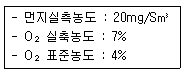
- 24.3mg/Sm3
- 26.8mg/Sm3
- 28.5mg/Sm3
- 29.5mg/Sm3
(정답률: 알수없음)
22. 다음 중 흡광광도법의 눈금보정에 사용되는 시약은?
- 수산화나트륨용액
- 중크롬산 칼륨용액
- 크롬산 나트륨용액
- 과망간산 칼륨용액
(정답률: 40%)
23. 배출가스중의 휘발성유기화합물질(Volatile Organic Compounds : VOC)시료 채취장치 중 흡착관법에 관한 설명으로 옳지 않은 것은?
- 각 장치의 연결부위는 진공용 그리스를 사용한다.
- 채취관 재질은 유리, 석영,불소수지 등으로 120℃이상까지 가열이 가능한 것이어야 한다.
- 밸브는 불소수지, 유리, 석영재질로 가스의 누출이 없는 구조이어야 한다.
- 응축기 및 응축수 트랩은 유리재질이어야 한다.
(정답률: 알수없음)
24. 가스크로마토그래프법을 이용하여 분석실험을 할 때, 분리관의 이론단수가 1600이고, 보유시간이 12분인 피이크의 좌우 변곡점에서 접선이 자르는 바탕선의 길이(mm)는? (단, 기록지 속도는 15mm/분이고, 이론단수는 모든 성분에 대하여 같다.)
- 6
- 12
- 18
- 24
(정답률: 알수없음)
25. 하이볼륨에어샘플러를 사용하여 비산먼지농도를 측정하고자 한다. 풍속의 범위가 0.5m/sec 이상되는 시간이 전 채취시간의 50% 이상 일때 풍속에 대한 보정계수는?
- 1.0
- 1.2
- 1.4
- 1.5
(정답률: 알수없음)
26. 환경정책기본법에서 규정하는 환경기준 설정항목 및 기타대기중의 오염물질에 관한 시험 및 분석을 위한 채취지점수(측정점수) 결정방법으로 가장 거리가 먼 것은?
- 인구비례에 의한 방법
- 확률년수에 의한 방법
- TM좌표에 의한 방법
- 대상지역의 오염정도에 따라 공식을 이용하는 방법
(정답률: 알수없음)
27. 다음 분석방법 중 화학반응 등에 수반하여 굴뚝 등에서 배출되는 브롬화합물 분석방법인것은?
- 차아염소산염법(적정법)
- 페놀디술폰산법
- 질산토륨 - 네오트린법(용량법)
- 아르세나조 III법 (침전적정법)
(정답률: 알수없음)
28. 굴뚝에서 배출되는 배출가스중의 페놀류를 흡광광도법으로 분석할 때 수산화나트륨용액(0.4W/V%)에 흡수시켜 시료를 포집한다. 포집액을 발색제로 발색 시 적정한 pH 범위는?
- pH 6±0.2
- pH 8±0.2
- pH 10±0.2
- pH12±0.2
(정답률: 알수없음)
29. 다음 중 질산암모늄을 가한 황산에 흡수시켜 니트로화하고 이것을 물로 희석한 후 중화시켜 메틸에틸케톤을 가하고 추출한 추출액에 알칼리를 가하여 잘 흔들어 섞어 얻어진 자색액의 흡광도를 측정하여 정량하는 것은?
- 불소화합물
- 벤젠
- 카드뮴화합물
- 질소화합물
(정답률: 알수없음)
30. 다음 측정방법에 관한 설명으로 옳은 것은?
- 관능법에 의한 악취 측정시 악취판정표는 0 ~ 6도까지 7종으로 구분되어 있다.
- 링겔만 농도표는 0 ~ 6 도까지 7종으로 구분되어 있다.
- 매연 측정시 될 수 있는 한 무풍일때 연돌구 배경의 검은 장해물을 피해 측정한다.
- 매연 측정시는 측정자의 위치가 연기의 흐름에 수평인 위치에 태양광선을 후면으로 받는 위치에서 측정한다.
(정답률: 알수없음)
31. 시료용액 중의 과망간산칼륨에 의하여 산화하고 요소를 가한 다음 아질산나트륨으로 과량의 과망간산염을 분해하고, 디페닐칼바지드를 가하여 발색시켜 파장 540nm부근에서 흡광도를 측정하여 정량하는 화합물은?
- 포름알데히드 및 알데히드류
- 불소화합물
- 납화합물
- 크롬화합물
(정답률: 알수없음)
32. 다음 중 오염물질과 그 분석방법의 연결로 옳지 않은 것은?
- 염화수소 - 티오시안산 제2수은법, 오르토톨리딘법
- 이황산탄소 - 흡광광도법, 가스크로마토그래프법
- 시안화수소 - 질산은적정법, 피리딘피라졸론법
- 일산화탄소 - 정전위전해법, 가스크로마토그래프법
(정답률: 알수없음)
33. 다음 중 원자흡광광도법에서 분석오차를 유발하는 일반적인 요인으로 가장 거리가 먼것은?
- 분무기 또는 버어너의 열화
- 공존물질에 의한 간섭
- 광원부 및 파장선택부의 광학계의 조정 불량
- 검량선 작성의 잘못
(정답률: 알수없음)
34. 다음 가스상 물질의 시료채취방법 중 흡수병 사용시의 조작에 관한 설명으로 옳지 않은 것은?
- 채취관에 유리솜을 채워서 여과재로 쓰는 경우, 그 채우는 길이는 150-250mm정도로 한다.
- 바이패스용 세척병은 분석대상가스가 산성일때에는 수산화 나트륨 용액(20W/V%)을 50ml넣는다.
- 바이패스용 세척병은 분석대상가스가 알칼리성일때는 황산(25W/V%)을 50ml 넣는다.
- 분석대상가스가 이황화탄소인 경우 흡수액은 디에틸아민동용액을 사용한다.
(정답률: 알수없음)
35. 다음 중 이온크로마토그래프법에 관한 설명으로 옳지 않은 것은?
- 용리액조는 전기 전도도 세에서 목적이온 성분과 전기전도도만을 고감도로 감출할 수있게 해주는 것이다.
- 용리액조는 일반적으로 폴리에틸렌이나 경질유리제를 사용한다.
- 보통 강수(비, 눈, 우박 등), 대기 먼지, 하천수 중의 이온성분을 정량, 정성분석 하는데 이용된다.
- 일반적으로 용리액조, 송액펌프,시료주입장치,분리관,써프렛서,검출기 및 기록계로 구성된다.
(정답률: 알수없음)
36. 원통 여지의 포집기를 사용하여 배출가스중의 먼지를 포집하였다. 측정치는 다음과 같다고 할 때 먼지 농도는 약 몇 mg/Sm3 인가?
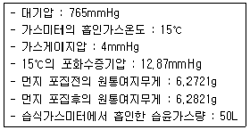
- 212
- 2⑤
- 200
- 192
(정답률: 알수없음)
37. 아래 그림은 소량의 가스를 채취할 때 사용되는 기구이다. 용도가 다른 하나는?
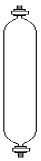
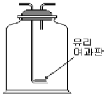
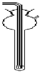
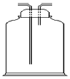
(정답률: 알수없음)
38. 굴뚝을 통하여 대기중으로 배출되는 오염물질을 분석하기 위하여 시료의 채취방법으로 가장 거리가 먼 것은?
- 가스상물질의 시료 채취지점은 농도가 대체로 균일하다고 인정되는 경우에는 임의의 한 점을 채취점으로 할 수 있다.
- 수평굴뚝의 경우 외부공기가 새어들지 않고 굴뚝에 요철부분이 없는 곳으로서 굴뚝의 방향이 바뀌는 지점으로부터 굴뚝내경의 2배이상 떨어진 곳을 채취 위치로 선정할 수 있다.
- 수질굴뚝의 먼지시료 측정점수는 원형굴뚝인 경우 굴뚝 직경이 1m 초과 2m 이하일 때는 4점으로 한다.
- 굴뚝의 단면적이 0.25m2이하로 소규모일 경우에는 그 굴뚝 단면의 중심을 대표점으로 하여 1점만 측정한다.
(정답률: 알수없음)
39. 굴뚝 배출가스 중 총탄화수소 측정방법에 관한 설명으로 옳지 않은 것은?
- 알칸(Alkens),알켄(Alkenes) 및 방향족(Aromatics)등이 주 성분인 증기의 총탄화수소(THC)를 측정하는데 적용된다.
- 분석결과는 교정가스 또는 탄소등가농도로 확산된 부피농도로 기록한다.
- 성능규격에 적합하거나 그 이상의 성능을 가진 불꽃이 온화분석기(FIA) 또는 비분산적외선분석기(NDIR)를 사용한다.
- 측정기의 측정범위는 배출허용기준 이하로 하며, 보통기준의 1/2~1배를 적용한다.
(정답률: 알수없음)
40. 굴뚝에서 배출되는 페놀화합물의 분석방법중 흡광광도법(4-아미노 안티피린법)에 대한 설명으로 옳지 않은 것은?
- 시료중의 페놀류를 수산화나트륨용액(0.4W/V%)에 흡수시켜 포집한다.
- 510nm의 가시부에서의 흡광도를 측정한다.
- 시료가스 채취량이 10L인 경우 시료중의 페놀류의 농도가 1-20V/Vppm 범위의 분석에 적합하다.
- 4-아미노 안티피린 용액과 페리시안산 칼륨용액을 순서대로 가하여 얻어진 청색액의 흡광도를 측정한다.
(정답률: 알수없음)
3과목: 대기오염방지기술
41. 중력식 집진장치에서 입자의 침강속도에 관한 설명으로 옳지 않은 것은?
- 입자직경의 제곱에 비례한다.
- 입자의 밀도와 가스의 밀도차에 반비례한다.
- 중력 가속도에 비례한다.
- 가스의 점성도에 반비례한다.
(정답률: 알수없음)
42. 염소농도가 0.8%인 배기가스2500Sm3/hr을 Ca(OH)2의 현탁액으로 세정처리하여 염소를 제거하려 한다. 이론적으로 필요한 Ca(OH)2 양(kg/hr)은? (단, Ca 원자량 40)
- 약 56
- 약 66
- 약 76
- 약 86
(정답률: 알수없음)
43. 다음의 재료로 만든 여과재 중 고온에 가장 잘 견디는 것은?
- Glass fiber
- Nylon(amide계)
- Nylon(ester계)
- 양모
(정답률: 알수없음)
44. 탄소소비(C/H)에 관한 다음 설명 중 옳지 않은 것은?
- 석유계 연료의 탄수소비는 연소용 공기량과 발열량 그리고 연료의 연소특성에도 영향을 미친다.
- 탄수소비가 크면 비교적 비점이 높은 연료는 매연이 발생되기 쉽다.
- 탄수소비가 클수록 이론공연비는 감소되며, 휘도는 높고, 방사율은 커진다.
- 중질연료일수록 탄수소비는 적게 되는데, 액체연료는 휘발유＞ 등유＞경유＞중유 순으로 탄수소비는 감소한다.
(정답률: 알수없음)
45. 세정식 집진장치에 관한 설명으로 옳지 않은 것은?
- 고온다습한 가스나 연소성 및 폭발성 가스의 처리가 가능하다.
- 점착성 및 조해성 분진의 처리가 가능하다.
- 소수성 입자의 집진율이 높다
- 입자상 물질과 가스의 동시제거가 가능하며 협소한 장소에도 설치가 가능하다.
(정답률: 70%)
46. 불화수소 900㎖/Nm3를 포함하는 배출가스 1000Nm3/hr를 수산화칼슘용액을 순환시켜 흡수하는 세정탑을 설치하여 불화수소를 제거하고자 한다. 이 세정탑을 10시간 운전하는데 필요한 Ca(OH)2의 이론량은? (단, 세정탑의 반응효율은 100%이다.)
- 약 12kg
- 약 15kg
- 약 17kg
- 약 20kg
(정답률: 알수없음)
47. 후드에 의한 오염물질 흡인요령에 관한 설명으로 옳지 않은 것은?
- 후드를 발생원에 가깝게 한다.
- 국부적인 흡인방식을 취한다.
- 후드의 개구면적을 크게한다.
- 에어커튼을 이용한다.
(정답률: 알수없음)
48. 액체염소 1.5kg을 완전 기하시키면 약 몇 Sm3가 되는가?
- 약 0.23 Sm3
- 약 0.47 Sm3
- 약 0.63 Sm3
- 약 0.87 Sm3
(정답률: 알수없음)
49. 어느 보일러에 사용하고 있는 중유의 고위발열량이 10.000kcal/kg일때 , 이 연료의 저위발열량은? (단, 연료 중의 수소함량은 12%, 수분함량은 0.3% 이다)
- 9.850kcal/kg
- 9.350kcal/kg
- 9.160kcal/kg
- 9.010kcal/kg
(정답률: 알수없음)
50. 부탄(C4H10)연소에 따른 아래 반응식의 계수로 옳은 것은?
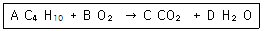
- A = 1, B = 13/2, C =3, D = 5
- A = 1, B = 13/2, C =4, D = 5
- A = 2, B = 13/2, C =4, D = 5
- A = 2, B = 13/2, C =5, D = 5
(정답률: 알수없음)
51. 다음 연료의 상부 주입식(over feed type) 소각로에서 용적구성비(%)중 CO에 해당하는 곡선은 어느 것인가?
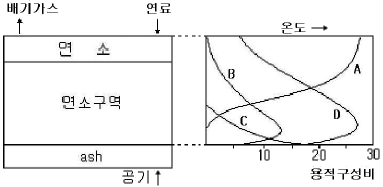
- A
- B
- C
- D
(정답률: 알수없음)
52. 두개의 집진장치를 직렬 조합하여 집진한 결과 전체 집진율은 99.8%였다. 이때 2차 집진장치의 집진율이 85%라면 1차 집진장치의 집진율은?
- 93.2%
- 95.8%
- 98.7%
- 99.3%
(정답률: 알수없음)
53. 어떤 굴뚝 배출가스중의 염소가스의 농도가 150㎖/m3이다. 이 염소가스의 농도를 25mg/Sm3로 저하시키기 위하여 제거해야 할 양(㎖/Sm3)은?
- 142
- 125
- 111
- 95
(정답률: 알수없음)
54. 다음 중 후드의 종류에 해당되지 않는 것은?
- diffusion type
- enclosure type
- booth type
- receiving type
(정답률: 알수없음)
55. 유해가스 처리에 사용되는 세정액 선택시, 그 정도가 높을수록 좋은 것은?
- 점도
- 휘발성
- 용해도
- 응고점
(정답률: 알수없음)
56. 다음 중 액화석유가스(LPG)에 관한 설명으로 옳지 않은 것은?
- 천연가스에서 회수되기도 하지만 대부분은 석유정제시부산물로 얻어진다.
- 액체에서 기체로 될 때, 증발열이 있으므로 사용하는데 유의할 필요가 있다.
- 비중이 공기보다 무거워 누출될 경우, 인화, 폭발성의 위험이 있다.
- 보통 LNG보다 발열량이 낮으며 착화온도는 200 ~ 250℃이다.
(정답률: 알수없음)
57. 다음 중 경우(Light oil)에 관한 설명으로 옳지 않은 것은?
- 비점이 대략 200 ~ 320℃ 정도이며, 등유와 중유의 중간에 유출되는 성분이다
- 비중은 0.8 ~ 0.9이고 정제한 것은 무색에 가깝다.
- 착화성이 좋은 연료 사용시 디젤엔진의 압축비가 가솔린엔진보다 매우 크므로 열효율이 높은 출력을 얻을 수 있다.
- 착화성 여부는 옥탄값으로 표시하며 착화성이 나쁘면 디젤 - 노킹현상을 일으킨다.
(정답률: 알수없음)
58. 다음 중 공기비가 작을 경우 연소실내에서 발생 될 수 있는 상황을 가장 잘 설명한 것은?
- 가스의 폭발위험과 매연발생이 크다.
- 배기가스 중 NO2량이 증가한다.
- 부식이 촉진된다.
- 연소온도가 낮아진다.
(정답률: 알수없음)
59. 배연탈질법 중 접촉환원법에 의하여 생성되는 부산물은?
- NH3
- N2
- HNO2
- HNO3
(정답률: 알수없음)
60. 평판형 집진기에서 방전극과 집진극 사이의 거리가 4cm, 공기의 유속이 2.5m/sec, 입자의 집진극 이동속도가 6cm/sec일때, 이 입자를 100% 제거하기 위한 이론적인 집진극의 길이는?
- 1.01m
- 1.22m
- 1.46m
- 1.67m
(정답률: 알수없음)
4과목: 대기환경 관계 법규
61. 다음 중 이산화질소(NO2)의 대기환경기준으로 옳은 것은?
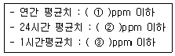
- ① 0.02 ② 0.⑤ ③0.15
- ① 0.03 ② 0.06 ③0.10
- ① 0.06 ② 0.10 ③0.15
- ① 0.10 ② 0.12 ③0.30
(정답률: 알수없음)
62. 대기환경보전법령상 사업자가 초과부과금에 대하여 징수유예를 받은 경우에는 유예한 날의 다음날부터 최대 얼마의 기간 이내에 납부하여야 하는가?
- 6개월
- 1년
- 1년 6개월
- 2년
(정답률: 알수없음)
63. 다음 오염물질중 1킬로그램당 초과부과금 부과금액이 가장 낮은 물질은?(문제 오류로 보기 내용이 정확하지 않습니다. 정확한 보기 내용을 아시는분 께서는 오류신고를 통하여 내용 작성 부탁 드립니다. 정답은 3번 입니다.)
- 불소화합물
- 황화수소
- 1년 6개월
- 2년
(정답률: 알수없음)
64. 다음 중 환경부장관에 의한 인증이 면제되는 차랑에 해당되지 않는 것은?
- 국가의 특수한 공용의 목적으로 사용하기 위한 군용자동차
- 주한 외국군대의 구성원이 공용의 목적으로 사용하기 위한 자동차
- 여행자 등이 다시 반출 할 것을 조건으로 일시 반입하는 자동차
- 국가대표 선수용 및 훈련용 자동차로서 문화관광부장관의 확인을 받은 자동차
(정답률: 20%)
65. 대기환경보전법규의 의거한 자가측정대상 항목 및 방법에 관한 기준으로 옳지 않은 것은?
- 매2월 1회이하 측정하여야 할 시설 중 특정유해물질이 포함된 오염물질을 배출하는 경우에는 시설의 규모에 관계없이 월 1회 이상 측정하여야 한다.
- 방지시설설치면제사업장은 당해 시설에 대한 자가측정을 생략할 수 있다.
- 측정항목 중 황산화물에 대한 자가측정은 당해 측정대상시설이 중유 등 연료유만을 사용하는 시설인 경우에는 연료의 황함유분석표를 갈음할 수 있다.
- 대기오염물질 중 먼지만 배출되는 시설로서 규정에 의한 여과집진시설을 설치한 배출시설은 시설의 규모에 관계없이 매반기 1회 이상 측정할 수 있다.
(정답률: 알수없음)
66. 대기환경보전법규상 위임업무 보고사항에 관한 기준으로 옳지 않은 것은?
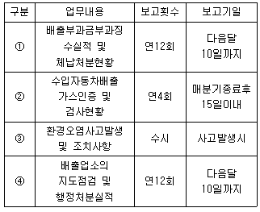
- ①
- ②
- ③
- ④
(정답률: 알수없음)
67. 다중이용시설 등의 실내공기질관리법규에 의한 실내주차장(연면적 2000m2 이상)의 실내공기질 유지기준으로 옳은 것은?
- CO2(ppm):1000이하
- HCHO(㎍/m3): 120이하
- CO(ppm) : 35이하
- PM-10(㎍/m3):200이하
(정답률: 알수없음)
68. 대기환경보전법규상 위임 업무 보고사항 중 보고횟수가 연1회에 해당되는 것은?
- 비산먼지발생대상사업장 지도, 점검 실적
- 굴뚝자동측정기기의 정도검사현황
- 휘발성유기화합물 배출시설설치신고현황
- 배출시설의 설치허가 및 신고, 오염물질 배출상황 검사, 배출시설에 대한 업무처리현황
(정답률: 알수없음)
69. 대기한경보전법규상 “기타 고체연료 사용시설”의 설치기준으로 옳지 않은 것은?
- 배출시설의 굴뚝높이는 100m이상이어야 한다.
- 연료 및 그 연소재의 수송은 덮개가 있는 차량을 이용하여야 한다.
- 연료는 옥내에 저장하여야 한다.
- 굴뚝에서 배출되는 매연을 측정할 수 있는 기기를 설치하여야 한다.
(정답률: 알수없음)
70. 다음 중 대기환경보전법령에 의한 배출시설 변경허가를 받아야 하는 시설기준은? (단, 일반오염물질 배출시설 설치사업장이며, 배출시설규모의 합계 또는 누계는 배출구별로 산출한다.)
- 설치허가(변경허가 포함)를 받은 배출 시설의 규모의 합계 또는 누계보다 100분의 20이상 증설하는 경우
- 설치허가(변경허가 포함)를 받은 배출 시설의 규모의 합계 또는 누계보다 100분의 30이상 증설하는 경우
- 설치허가(변경허가 포함)를 받은 배출 시설의 규모의 합계 또는 누계보다 100분의 50이상 증설하는 경우
- 설치허가(변경허가 포함)를 받은 배출 시설의 규모의 합계 또는 누계보다 100분의 70이상 증설하는 경우
(정답률: 알수없음)
71. 대기환경보전법규상 자동차연료용 첨가제의 종류에 해당하지 않는 것은?
- 엔진진동 억제제
- 청정 분산제
- 세탄가 향상제
- 다목적 첨가제
(정답률: 알수없음)
72. 환경정채기본법령상 납(Pb)의 환경기준으로 옳은 것은?
- 연간평균치 : 0.5㎍/m3이하
- 24시간 평균치 : 1.5㎍/m3이하
- 8시간 평균치 : 1.5㎍/m3이하
- 1시간 평균치 : 5㎍/m3이하
(정답률: 알수없음)
73. 대기환경보전법상 배출시설 및 방지시설 등의 가동개시 신고시 환경부령이 정하는 시운전 기간의 기준은?
- 가동개시일부터 15일까지를 말한다.
- 가동개시일부터 30일까지를 말한다.
- 가동개시일부터 45일까지를 말한다.
- 가동개시일부터 60일까지를 말한다.
(정답률: 알수없음)
74. 배출허용기준의 준수여부 등을 확인하기 위하여 채취한 오염물질을 검사하도록 대기환경보전법령의 규정에 의하여 지정된 오염도 검사기관에 해당하지 않는 것은?
- 충남보건환경연구원
- 낙동강유역환경청
- 한국기술과학원
- 원주지방 환경청
(정답률: 알수없음)
75. 고체연료 환산계수 중 휘발유의 환산계수는? (단, 단위 : 리터(L), 무연탄 (kg)의 환산계수 : 1.0)
- 1.32
- 1.50
- 1.68
- 1.80
(정답률: 60%)
76. 대기환경보전법규상 측정망에 의한 상시 측정결과 대기오염도가 환경기준의 몇 퍼센트 이상인 지역을 대기환경 규제지역으로 지정하는가?
- 50퍼센트
- 60퍼센트
- 70퍼센트
- 80퍼센트
(정답률: 알수없음)
77. 대기환경보전법규정을 위반하여 7년 이하의 징역 또는 1억원 이하의 벌금형에 해당하는 사항이 아닌것은?
- 연료사용제한조치등의 명령에 위반한자
- 대기배출시설 설치허가를 받지 아니하고 조업한자
- 대기배출시설 변경허가를 받지 아니하고 조업한자
- 제작차배출허용기준에 적합하지 아니하게 자동차를 제작한자.
(정답률: 알수없음)
78. 대기환경보전법규상 경유를 사용하는 자동차의 경우 대통령령이 정하는 배출가스의 종류로 거리가 먼 것은?
- 탄화수소
- 입자상 물질
- 질소산화물
- 알데히드
(정답률: 알수없음)
79. 대기환경보전법규상 대기오염경보 발령기준이 되는 오존농도의 측정기준농도는?
- 1시간 평균농도
- 1시간내 최고농도
- 3시간 평균농도
- 3시간내 최고농도
(정답률: 알수없음)
80. 미세먼지(PM-10)의 24시간 평균치 기준(환경기준)은?
- 50㎍/m3이하
- 75㎍/m3이하
- 100㎍/m3이하
- 150㎍/m3이하
(정답률: 알수없음)
균질층의 최대 범위는 대기 중 가장 많은 기체인 질소와 산소가 혼합되어 있기 때문에, 이들 기체의 농도 변화가 크지 않습니다. 따라서 균질층의 최대 범위는 지상에서 대기압이 1/10이 되는 고도인 88km까지로 알려져 있습니다. 이 범위를 넘어서면 대기 중 다른 기체들의 농도 변화가 크게 일어나기 때문에 이질층으로 분류됩니다.